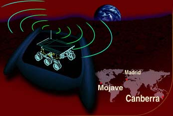

|  |
|
Did you know that Pathfinder communicates via the
Deep Space Network, the most sophisticated telecommunications
network in the world? But all you need to communicate with
Pathfinder is a 14.4 modem, your favorite web browser, and
Cosmo Player. Get ready for the trip of your life because
the folks at Cosmo Software are sending you to Mars! Examine
the rover in a totally interactive 3D environment, follow the
Pathfinder's trajectory to Mars in a breathtaking real-time
simulation, and examine the actual 3D surface of the red planet
taken from data sent by the Sojourner itself. Plus much more!
So hurry up.
|